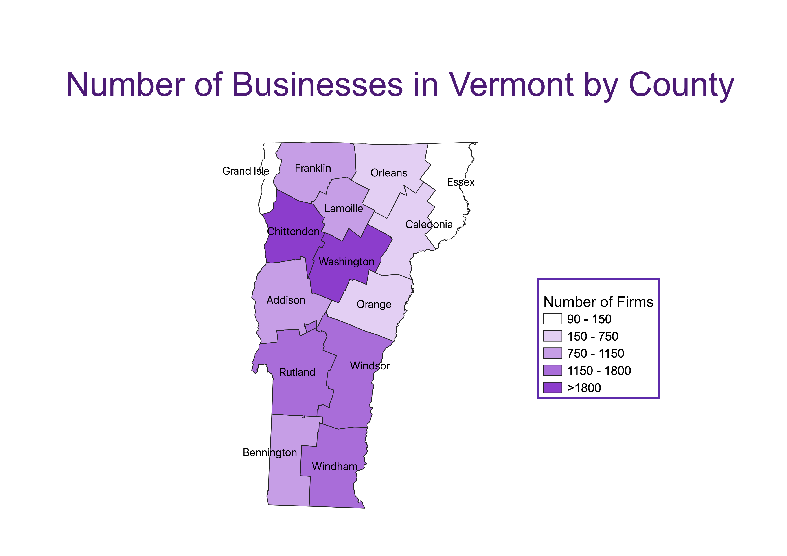

Vermont Census Data Choropleth: Businesses By County
This map was created with US Census data on the number of business firms present in Vermont between 1978 and 2018. This map reflects the number of firms operating in each Vermont county in 2018.

Data used for this project
CSV Dataset
Link to Shapefile